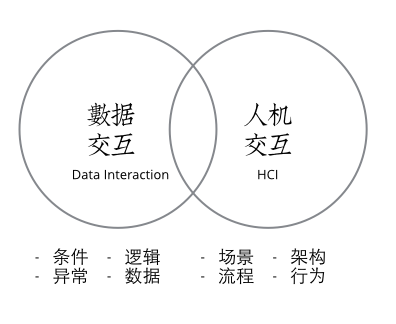
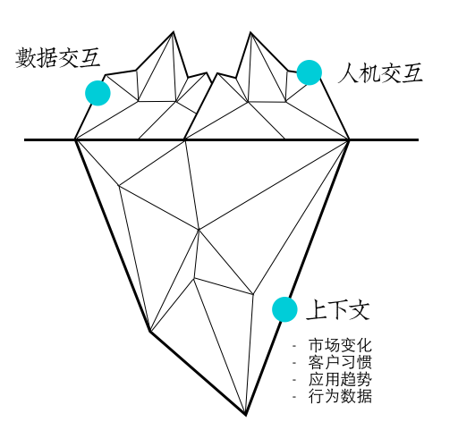
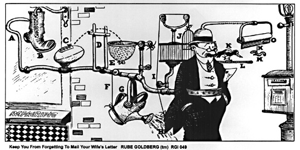

这个问题的简单回答是:根本没有“工程师思维”。
当设计思维被广泛谈论的时候，惯性思维使然，出现了所谓“工程师思维”，直觉上，“工程师思维”仿佛站在了“设计思维”的对面，但事实上，工程师思维是并不存在的概念，设计思维跟设计师这个角色没有多直接联系。
于是，当你的问题是：设计师应该如何锻炼自己的工程师思维的时候，真正的问题应该是：如何和工程师合作。
更好地和工程师合作并不是掌握所谓工程师思维，而是应该学会如何像工程师一样的思考，那么工程师是如何思考一个问题的呢？
工程师重要的思考习惯是从几个方面的信息中产生模式（Pattern），通过模式产生出代码，因此，一个好的沟通模式是设计师尽可能提供足够的信息帮助工程师形成“模式”。
另一个方面，设计师往往喜欢从用户的角度讲述流程，而工程师所习惯关注地往往是“数据交互”而非“人机交互”，这也是设计师和工程师思考方式的不同之一。

这并不代表向工程师讲交互流程并不重要，而是我们需要结合“数据交互”和“人机交互”二者与工程师进行沟通。
数据交互
设计师通常擅长讲解“人机交互”，那么我们来看看设计师应该如何讲解“数据交互”，我们推荐设计师思考以下四个方面：
- 条件（Condition）
- 异常（Exception）
- 逻辑（Logic）
- 数据（Data）
假设我们要向工程师表达一个登录的设计：
- 一个用户名输入框
- 一个限定位数的密码输入框
- 一个按钮
最传统的沟通方式是使用页面流图的方式，从用户的角度，把使用场景、信息架构、页面流程、交互行为完整的展示，而如果我们考虑工程师的思维方式，我们可以体现以下信息：
条件
进入这个设计的触发条件是什么，例如登录的入口，点击什么内容能够触发这个登录界面；进入这个设计的前提条件是什么，例如用户未曾登录。
异常
这里的异常通常指异常的数据输入，这有别于一个错误的结果，后者只是结果的一种，经过判断逻辑，而前者的异常出现在逻辑执行前。
逻辑
逻辑用来处理1）异常的数据输入；2）正确或错误的处理结果；3）后台其他的写入逻辑。在我们的例子中它们分别对应：1）超过位数限制的密码；2）密码交验逻辑；3）后台记录一次登录时间。
数据
数据记录着在整个设计中，需要什么样的数据作为输入、需要什么样的数据作为展示，以及数据的读写。
系统复杂度
系统复杂度往往是没有工程背景的设计师所难以理解的概念，因为大部分“以用户为中心”的设计师通常以用户的感官设计体验，而非系统，这并不是反对“以用户为中心”的设计方式，而是多一种思维习惯去理解工程师对实现的担忧。怎么感觉系统复杂度呢？
其实很简单，当你仔细思考上面提到的条件、异常、逻辑、和数据四个方面，当每个分类中的需求越多，复杂度自然变高，这样的思考也会使得你逐渐简化你的设计。
一个突破现有模式的“新模式”也会提高整个的系统复杂度，例如当我们已有一个模式叫做“点击某个内容，弹出登录界面”，如果要新增加一个模式叫做“点击内容超过5次，弹出登录页面”，这里需要对以前的现有模式进行修改，整体的复杂度也有所提升。
此外，数据的相关性也需要考虑，当数据来自于不同系统，或使用不同系统对已有逻辑进行数据处理，系统的复杂度也会大大提升。
因此当工程师进行估算时，你不妨去听听他们估算的方式，他们的语言往往不是基于页面，而是举出例子来评估系统复杂度，例如：“3个数据需要从第三方来、调用3个接口、有10条后台逻辑要写、5个前台逻辑、2个新页面模板、1个数据要写入其他模块、需要重构、需要修改以前的核心业务测试逻辑”。当你面对自己的设计，能够掰出手指数出影响系统复杂度的几个因子，在和工程师沟通时自然能够理解他们所说的语言。
设计思维
之所以我认为设计思维的对面绝对不是工程师思维，是因为，设计思维本身就是工程师和设计师应该共同拥有的思维习惯，而并不区分角色。除去“数据交互”和“人机交互”，设计师应该帮助工程师了解的是上下文（Context）。
上下文是隐藏在“数据交互”和“人机交互”之下的东西，它通常包含很多方面，例如市场变化、客户习惯、应用趋势、行为数据等等。例如“点击内容超过5次，弹出登录页面”背后的上下文可能是：用户停留在“发现页面”上的时间很长，但是一旦点击一个内容弹出对话框后页面离开率很高。

通常的情况下，这样的信息甚至连设计师都无法掌握，更不用说传递给工程师了，而设计师真正应该做的，是将这“双头冰山”水上和水下的部分统统展示出来，这也是设计思维的真正体现。
真正的修炼
归根结底，真正的修炼在于“去体验程序员做的事情”，例如抽象模式、归纳逻辑、建立假设、建立标准。有人说，过度追求逻辑和模式可能使设计缺乏“人”的因素，事实上，大部分的设计师连“追求”都谈不上、还不需要担忧“过度追求”。
以前的文章《体验设计师该学习的一点前端技术》中曾经提过关于网页工程方面的技能积累，除了掌握一定的前端知识之外，培养自己的系统思维能力也是必不可少，培养系统思维主要分：
- 系统内部的关系
- 系统外部的联系
了解系统内部关系帮助我们看穿一个看似封闭的系统（用户通常无法感知也是以用户为中心的设计无法解决的）。小时候特别喜欢看《鲁布·戈德堡机械》，看似平常物之间奇妙的互动最后完成一个平常的任务，这就是系统的乐趣所在，此外仔细研究几个著名的“系统故事”也可以逐渐培养你的逻辑和系统思维，例如“囚徒困境”、“啤酒游戏”。

了解系统外部的联系帮助我们在更高的角度理解整个生态系统，这里联系除了工程师更多关注的数据联系，包含经济、人文、文化、政治、环境等诸多联系，这并不意味着设计一个登录界面需要考虑对环境有什么影响，这只是一种思维方式，这样的思维方式帮助设计师与工程师进行沟通和协作。
从设计师到营造者
建筑师（Architect）一词在希腊语词源arkhitekton中包含两个意思arkhi-, chief + tekton, builder，也就是Chief Builder，通过与工程投资方和施工方的合作，在技术、经济、功能和造型上实现建筑物的营造，他们兼具艺术家的审美眼光、工程师的力学和材料知识、还要有说服商业投资者的商业头脑。在这里，他们并不是“设计师”（Designer），而是“营造者”（Builder）。
在软件领域，也有“程序员（Developer）”和“架构师（Architect）” 的区别；有趣的是在我们所说的设计领域（数字产品设计），却鲜有“Architect”的概念，有的最多是“产品经理”这样的角色（残缺的）。相信在不久以后，我们所在的领域，也会出现这样的角色，他们拥有：
- 人机交互设计师对于信息、界面、交互、视觉表现优秀的审美；
- 工程师对于逻辑、流程、数据、系统的思维方式；
- 对商业、环境、文化、人因、政治诸多因素的审视。
我们经常陷入一种误区，害怕某种思维方式会影响我们现有的思维方式，例如过多的逻辑思维会不会影响我对人和直觉的关注，最后影响我的设计，当设计越来越不是一个单独的技能而进化为一个“整体营造行为”中的一部分（我是一个水印，用于对付不尊重作者的公众号转发，请点这里看原文）时，我们所执着的思维方式也需要演进。
这并不意味我们需要掌握并不存在的“工程师思维”、使用它和工程师进行合作，而是将工程师看待设计的方式融入到我们自己的思维习惯中，这也将帮助我们完成从设计师到营造者的转化，作为“营造者”，你必将超越工程师、产品经理、和现在作为设计师的你。